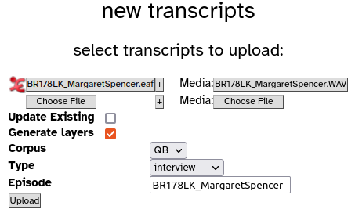
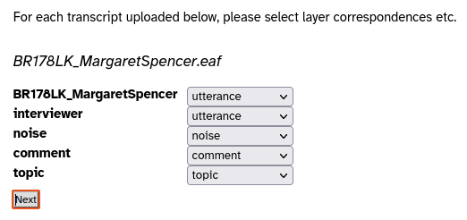
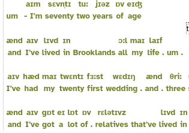
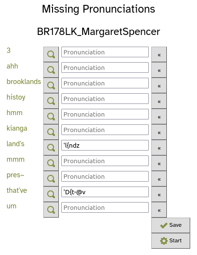
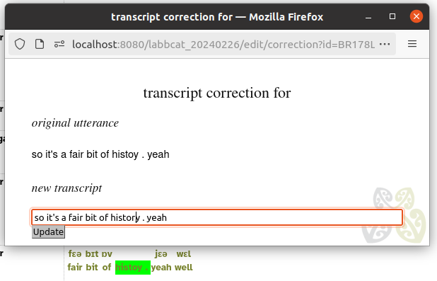
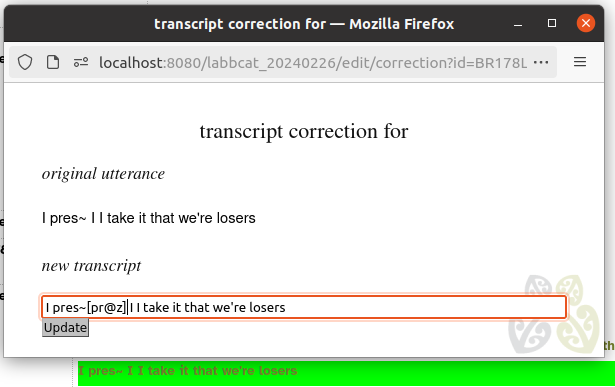
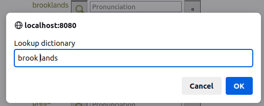
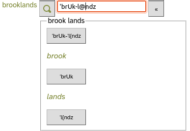
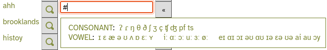
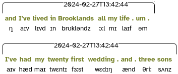

Upload and Force-align Transcripts
This workflow details the steps required to upload new transcripts and then run forced alignment on them.
These instructions assume that
- you’ve got a LaBB-CAT server set up
- it’s already configured for CELEX-based pronunciations to be tagged on the phonemes layer
- it’s already configured for forced alignment with HTK
- the HTK configuration is designed for the per-speaker train/align procedure
There are two sub-tasks:
- upload the transcripts for a given speaker, and then
- run forced alignment for all of that speaker’s utterances.
These two broad steps will be repeated for each speaker.
1. Upload Transcripts
As forced alignment is done on a per-speaker database, it’s best to upload all the transcripts that a speaker appears in before running forced alignment.
- Choose a speaker/participant to upload.
- Identify all the transcripts/recordings that they appear in. This may be only one transcript, which is fine. But if they’re in more than one recording, they should all be uploaded before forced alignment, to maximise the amount of speech available for training acoustic models for alignment.
- In LaBB-CAT, select the upload option in the menu.
- Select the first option, upload transcripts.
- Press the left-hand Choose File button and select the first transcript file (it may be a .eaf ELAN file, or a Praat .TextGrid file, etc.).
When you select a file, a new row of Choose File buttons will appear below the first. This is for adding more transcripts in the ‘episode’. An ‘episode’ is a set of transcripts that belong together because they were recorded during the same session. Unless your recordings for a speaker wer all recorded on the same day, each recording session has only one recording.
- Next to Media on the first row, press Choose File
- Select the .wav file that corresponds to the transcript.
- Ensure the Corpus option is correct for the transcript you’re uploading.
- Ensure the Type option is correct (e.g. interview for an interview, word-list for a word list reading, etc.)
- Leave the other options as-is, and press Upload

ELAN/Praat transcripts have a number of Tiers defined in them, e.g.:
- one for the participant's utterances,
- another for an ‘interviewer’ if there is one,
- one for noise annotations,
- one for transcriber comments, and
- one for topic annotations.
Each tier must be mapped to a LaBB-CAT annotation layer.
Now that you’ve uploaded the file, LaBB-CAT has analysed the structure of the transcript file and pre-selected some default options for layer mappings. These defaults are correct under most circumstances, but it’s a good idea to double-check that
- tiers that contain transcripts of speech are mapped to utterance and
- tiers that contain other information aren’t mapped to utterance.

- Click Next to continue.
This will display a page listing all the speakers in the transcript, so you can select which one is the ‘main participant’, which is the speaker selected by default for searches and other processing. - Ensure that the target speaker is ticked, and others like the interviewer are not ticked, and click Set Main Participants.
This will display a page with the name of transcript you uploaded, with an edit meta-data link, and a progress bar (which may have already finished). The progress bar indicates progress with processing of automatically generated annotations. - Ensure the progress bar finishes, and there are no errors.
If there are more transcripts to upload for this speaker, you can repeat from step 5. above, using the form below the heading ‘select transcripts to upload’.
- Click the name of the (last) transcript you uploaded.
This opens LaBB-CAT’s interactive transcript page. - Double check that the transcript text appears correct and that the media playback control appears on the top right.
- Click on an utterance and select the Play option from the resulting menu.
Ensure that the audio corresponding to the given utterance is played. - At the top of the page, tick the phonemes layer, to show the pronunciation annotations on the words.
You should see that most, if not all, words in the transcript have a pronunciation above them.

For HTK to force-align an utterance, it must know the pronunciation of every word in the utterance. It uses the phonemes layer to determine what the pronunciations are, and these are usually tagged by looking up a lexicon like CELEX.
If you see gaps in the phonemes layer on the transcript, these are words for which there is no known pronunciation. These missing entries should be filled in in order to ensure HTK force-aligns all utterances; there are instructions for this below.
At this point, the transcripts have been uploaded and are ready for forced alignment.
2. Forced Alignment
To start a forced-alignment process per-speaker, you need to first select the speaker to be aligned. Then you will fill in any pronunciations that are missing from the dictionary. After that, HTK will automatically force-align their utterances, producing start/end times for each speech sound.
- In LaBB-CAT, select the participants option on the menu
- Find and tick the speaker.
- Press the All Utterances button
- Press List
- Once the paginated list of utterances appears, press the Htk button below.
LaBB-CAT will first determine which words have missing pronunciations; you will see a progress bar, and then a list will appear of words that need their pronunciations adding to the dictionary. The list of missing words may grow as more utterances are analysed.

The list has the following columns:
- The word that is missing
- A dictionary lookup button
- A box for entering the pronunciation that you want to add to the dictionary
- A phoneme selector button
Each of these is explained below:
The missing word
If you click the word, it will open, in a separate tab, the first transcript in which the word appears, so you can see the context, play the audio, etc.
This is for cases where it’s not clear from the spelling what the pronunciation should be, and cases where you need to change the transcript, instead of adding an entry to the dictionary.
For example:
- If the word is a spelling mistake, you need to correct it in the transcript:
- click the word to open the transcript where it appears,
- click the word in the transcript and select Edit Transcript (under ‘Utterance’) from the resulting menu,
- fix the spelling error:

- press Update and then Close.
- In some cases, it’s an interrupted word, or some other one-off case that shouldn’t be added to the global dictionary, because it won’t come up over and again in other transcripts.
These cases need to have a pronounce tag added to the word token directly in the transcript:- click the word to open the transcript where it appears,
- click the word in the transcript and select Edit Transcript (under ‘Utterance’) from the resulting menu,
- immediately after the hesitated word, with no intervening space, add a DISC pronunciation enclosed in square brackets – this is a pronounce tag:
 - press Update and then Close.
Dictionary Lookup
This allows you to lookup the dictionary for similar words, in order to quickly get a pronunciation that you can adapt. Clicking the button allows you to lookup one or more words in the dictionary:

The pronunciations for the words you enter are displayed on buttons:

Pressing a button adds that pronunciation to the box above, so you can base the new pronunciation on existing ones, correcting them before adding them to the global dictionary.
The dictionary lookup can be useful for compound words like tarseal, numbers like 3 (you can look up “three”), and words that are pronounced similarly.
Pronunciation Box
Adding to the dictionary means that the pronunciation you add becomes available to all other transcripts, as well as the one(s) you’re force-aligning now.
The pronunciations must ben entered using CELEX’s ‘DISC’ symbols (i.e. one character per phoneme, with no spaces), see below.
Phoneme Selector
This button helps with using the correct symbols.

Clicking on an IPA symbol adds the corresponding DISC symbol to the pronunciation box.
Some of the pronunciations may already be filled in. In these cases, LaBB-CAT is suggesting a pronunciation, based on how the word relates to other words it already has a pronunciation for. The suggestion may be wrong, and you should check/correct these before saving them.
The pronunciations you add to the dictionary should include:
-: the syllable separator (hyphen)': the primary lexical stress marker (apostrophe), and": the secondary stress marker (double-quote) if any.
If you use the dictionary lookup button, these are included in the pronunciations that are returned.
Basically you need to fill in the boxes with the pronunciations and click Save. You don’t have to fill them all in before clicking Save, you can save several pronunciations, which will disappear from the list, leaving the ones you haven’t filled in yet.
You don’t have to fill in all pronunciations, you can leave some empty and continue with the HTK forced-alignment by clicking Start
However, HTK will ignore any lines where the remaining unknown words appear, so not all utterances will be aligned in the end.
- Once you’ve filled in all the missing pronunciations, forced alignment will start automatically. If you want to start forced alignment before you’ve entered all pronunciations, click the Start button at the bottom of the page.
You should see a progress bar while the forced alignment is running. It will take a few minutes to complete.
Once HTK has produced the word and segment alignments, it:
- sets the start/end times of the words on the transcript layer accordingly,
- adds new phone annotations to the segment layer with the alignments of the phones, and
- saves a timestamp in the htk layer.
When the layer manager has finished, you’ll see a message saying “Complete - words and phones from selected utterances are now aligned.”
To double-check aligned segment annotations were created:
- Select the transcripts option from the menu.
- Find one of the transcripts the speaker appears in, and click its name to open it.
- Tick the htk layer and the segment layer
- Check that each of the speaker’s utterances has a time-stamp annotation above, and phone annotations below for each word.

Exceptions might include:
- utterances with words that still have missing pronunciations, and
- simultaneous speech (i.e. there’s another participant speaking at the same time) – these are deliberately ignored as automatic aligments are usually of poor quality.
CELEX ‘DISC’ Pronunciation Symbols
These are the symbols that should be used for all pronunciations:
| IPA | DISC | IPA | DISC | |||
| p | p |
pat | ɪ | I |
KIT | |
| b | b |
bad | ε | E |
DRESS | |
| t | t |
tack | æ | { |
TRAP | |
| d | d |
dad | ʌ | V |
STRUT | |
| k | k |
cad | ɒ | Q |
LOT | |
| g | g |
game | ʊ | U |
FOOT | |
| ŋ | N |
bang | ə | @ |
another | |
| m | m |
mat | i: | i |
FLEECE | |
| n | n |
nat | α: | # |
START | |
| l | l |
lad | ɔ: | $ |
THOUGHT | |
| r | r |
rat | u: | u |
GOOSE | |
| f | f |
fat | ɜ: | 3 |
NURSE | |
| v | v |
vat | eɪ | 1 |
FACE | |
| θ | T |
thin | αɪ | 2 |
PRICE | |
| ð | D |
then | ɔɪ | 4 |
CHOICE | |
| s | s |
sap | əʊ | 5 |
GOAT | |
| z | z |
zap | αʊ | 6 |
MOUTH | |
| ∫ | S |
sheep | ɪə | 7 |
NEAR | |
| ʒ | Z |
measure | εə | 8 |
SQUARE | |
| j | j |
yank | ʊə | 9 |
CURE | |
| x | x |
loch | æ | c |
timbre | |
| h | h |
had | ɑ̃ː | q |
détente | |
| w | w |
wet | æ̃ː | 0 |
lingerie | |
| ʧ | J |
cheap | ɒ̃ː | ~ |
bouillon | |
| ʤ | _ |
jeep | ||||
| ŋ̩ | C |
bacon | ||||
| m̩ | F |
idealism | - |
syllable separator | ||
| n̩ | H |
burden | ' |
primary stress | ||
| l̩ | P |
dangle | " |
secondary stress |